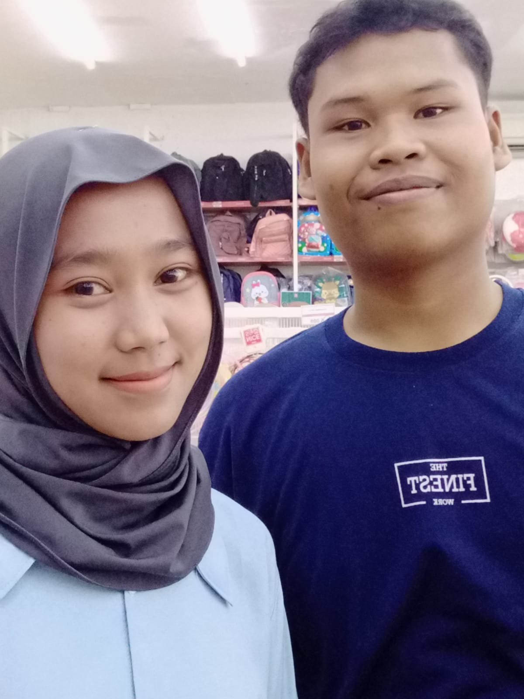

Saturday 09 November

Happy Birthday Cantiiiiikkkkk!
aku hanya berharap kau lebih bahagia. mungkin, kalimat itu terdengar pasaran. tetapi, diantara banyaknya hal yang aku aminkan; kebahagiaanmu adalah apa yang paling kuingini untuk terwujud dibanding semua hal lain.
barangkali, itulah bentuk cintaku yang baru.semua ego yang dulu memaksakan untuk bersama, keras kepalaku yang pernah meminta-Nya menjadikanmu milikku di lain masa telah berganti menjadi doa-doa baik yang lebih rela.
banyak semoga untukmu, dariku yang bahkan lupa menyemogakan diriku.
cintaku belum habis. ia tumbuh lebih tinggi, meneduhkan segala mimpi dan harapan. meneguhkan diriku untuk menerima kenyataan
'Bahwa ternyata,aku hanya bisa menyerahkan semuanya pada tuhan'